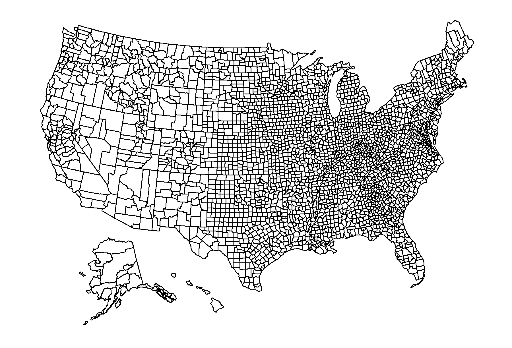

<br>
<code>usmap</code> is an <code>R</code> package designed to allow convenient plotting of US choropleths that include Alaska and Hawaii.
<br>
<br>
<h2>Links</h2>
<ul>
    <li><a href="http://www.github.com/pdil/usmap" target="_blank">Github Repo (pdil/usmap)</a> - contains source code, documentation, and tests</li>
    <li><a href="https://github.com/pdil/usmap/blob/master/README.md" target="_blank">README</a> - contains installation instructions, feature list, and more.</li>
</ul>

<br>
<h2>Example</h2>
